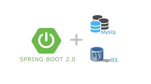

BIENVENIDO
¿QUIEN SOY?
Hola soy jedier stivenson correa amaris actualmente estudiante de campusnland/uniminuto colombia, actualmente tengo una edad de 17 años con ansias de seguir estudiando a futuro lenguajes como c++, c entre otros lenguajes
Desarrollador con experiencia en web y bases de datos. Trabajo con JavaScript, HTML y CSS, desarrollando interfaces dinámicas con Web Components, validación de formularios y manejo de datos en JSON y localStorage. También tengo conocimientos en Java, C# (básico) y Python.

BIENVENIDO A LOS LENGUAJES QUE CONOSCO
HTML, Css, JavaScript
Python, Mysql, Pstgrest, spring boot
C#, java

BIENVENIDO A LOS PROYECTOS QUE E REALIZADO
Proyecto "Avioncito" – Juego en C# con Windows Forms
Descripción: "Avioncito" es un proyecto desarrollado con el objetivo de aprender y mejorar mis habilidades en el lenguaje de programación C#. Utilizando Windows Forms, he diseñado e implementado un juego en el que el jugador controla un avión y debe evitar colisiones con otros aviones enemigos.
Haz clic aquí para ver más detalles
Proyecto "Calculadora en C#" – Aplicación de Windows Forms
Descripción: Esta calculadora fue desarrollada con el propósito de mejorar mis habilidades en C#. Utilizando Windows Forms, he creado una aplicación funcional que permite realizar operaciones matemáticas básicas de manera sencilla e intuitiva.
Haz clic aquí para ver más detalles
Proyectos Web
Proyecto SpaceX
Descripción: Este proyecto fue desarrollado con el propósito de mejorar nuestras habilidades en desarrollo web. A través de tecnologías modernas, hemos creado una aplicación funcional e intuitiva.
Haz clic aquí para ver más detalles